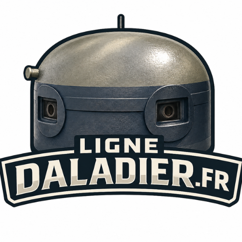
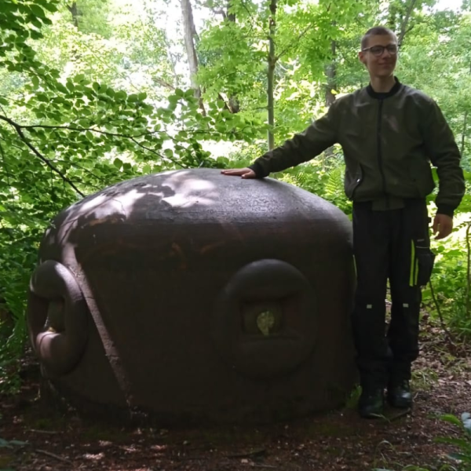

Description du site
Le site La Ligne Daladier est consacré à l’histoire des fortifications françaises construites entre 1937 et 1940 le long de la frontière belge, afin de prolonger la ligne Maginot face à la menace allemande.
Il présente les blockhaus, casemates et secteurs fortifiés du nord de la France, ainsi que leur organisation et leur rôle stratégique.
Ce projet met en lumière un patrimoine militaire souvent méconnu, parfois surnommé la “ligne Maginette”.

Biographie de l'auteur
Je suis Erwan Merlin, depuis tout petit je m'intéresse à l'histoire, j'ai toujours voulu comprendre le monde qui m'entoure. Puis je me suis spécialisé sur la seconde guerre mondiale et plus précisément la ligne Maginot.
Habitant dans le nord, j'ai toujours eu une admiration pour les blockhaus et savoir leur histoire. Je me suis tout de suite passionné pour cette histoire méconnue de la ligne Daladier.
Aujourd'hui, je vous propose un site web vous permettant de comprendre cette histoire.
Pour toutes questions contactez moi ici : erwan.merlinpro@gmail.com

Mes partenaires
Le groupe les blockhaus lyssois : lesblockhauslyssois.fr